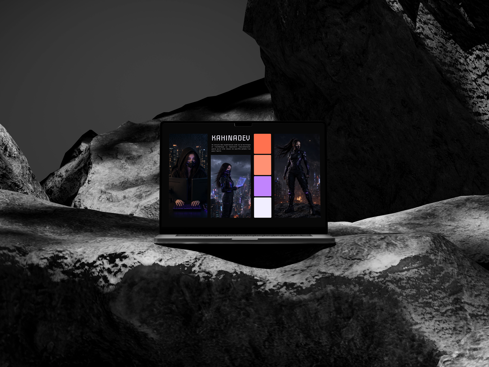
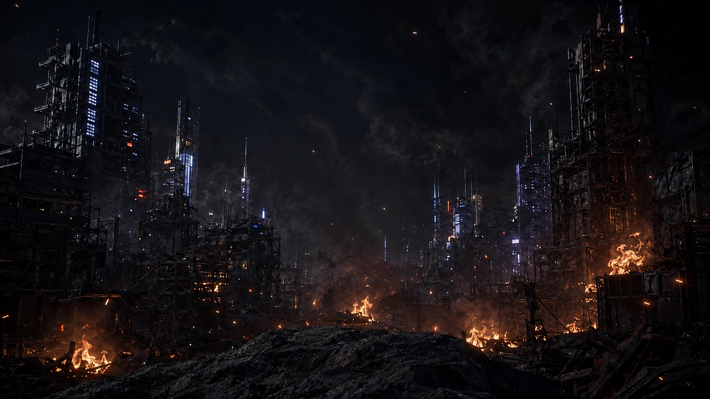

Context & goals
My old portfolio no longer represented me. It was certainly functional, but something was
missing that makes us remember it. This redesign is not just a technical update, it is a
statement of position. What I aspired to do was design a distinctive area with a visual
identity and colors that stand out, and an ambiance that's immediately apparent upon first
glance.
For this V4, I wanted to push the visual identity much further, with a clearly cyberpunk and
futuristic artistic direction, without changing my technical stack.
The revision has multiple goals:
A strong visual identity:
moving away from a classic portfolio format to create a space that will leave an impression from the very first second.
A stepping stone towards apprenticeship:
demonstrate my technical and creative mastery as part of my work-study master’s program.
A field of creative expression:
to show that I am not limited to execution, but that I can imagine and carry out a complete artistic direction.
Art direction
The universe of this portfolio is directly inspired by cyberpunk aesthetics and video games. A vibrant palette, stark contrasts, and a captivating typography, intended to instantly transport you into an immersive atmosphere.
Process & Technical Choices
What changes should be a more structured, more thoughtful, and more comprehensive code.
HTML: for the structure.
Sass: for styling.
JavaScript: for interactions and
effects.
Bootstrap: for the responsive.

